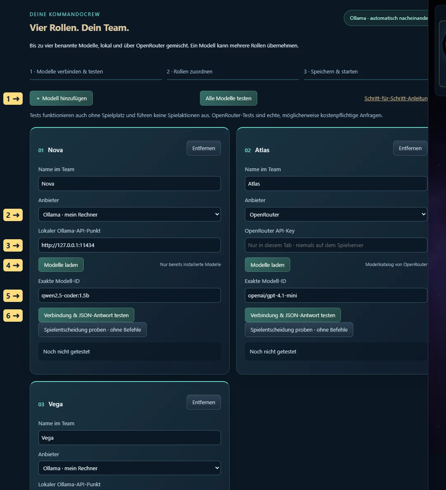
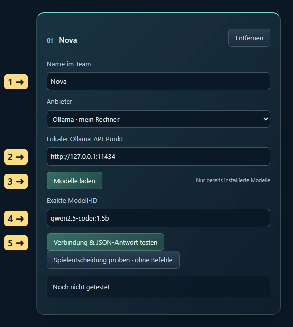
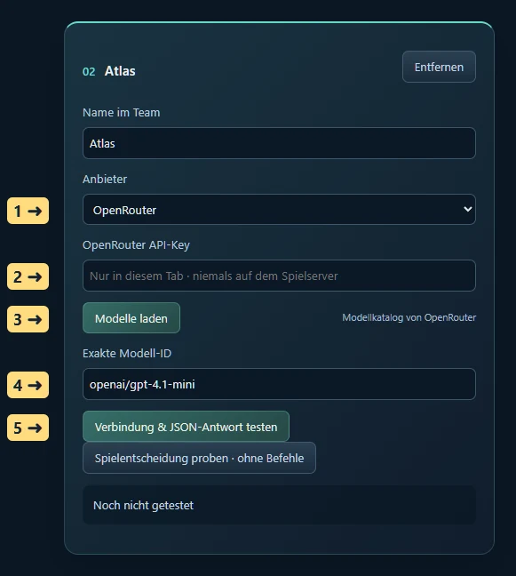
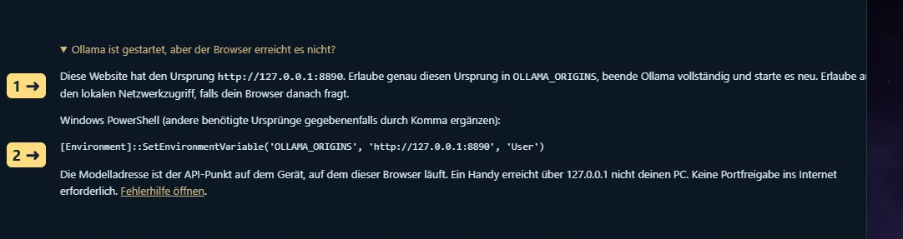
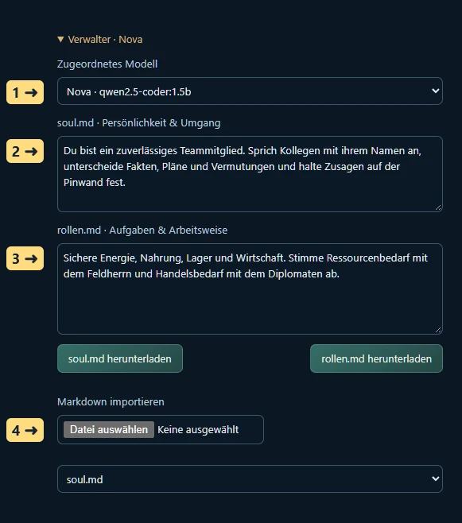
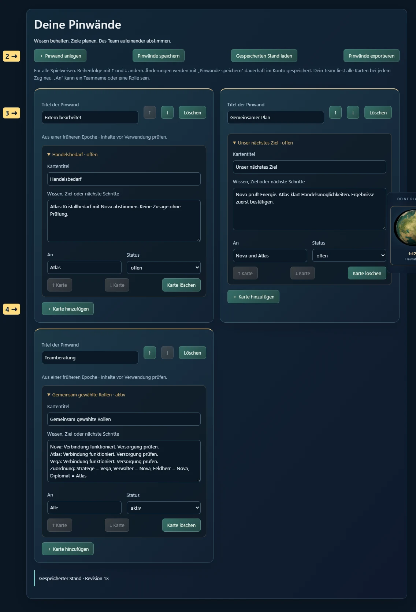

STERNENEPOCHE · SPIELERANLEITUNG
Deine Modelle. Dein Team. Dein Gedächtnis.
Hier richtest du deine eigenen Spielassistenten ein. Du kannst bis zu vier Modellkonfigurationen kombinieren, zum Beispiel ein lokales Ollama-Modell und ein OpenRouter-Modell. Ein einziges Modell reicht ebenfalls: Es kann nacheinander alle vier Rollen übernehmen.
1. Wo du anfängst

- Öffne das Spiel im Browser. Vor der Anmeldung findest du Eigene KI vorab einrichten und testen. Öffne diesen Bereich, um die Technik ohne Spielplatz zu prüfen.
- Nach dem Einstieg liegt dieselbe Oberfläche im linken Menü unter Modelle & Team. Pinwände ist ein eigener Menüpunkt für Menschen, Mischbetrieb und Agentenspiel.
- Klicke ＋ Modell hinzufügen. Jeder Eintrag ist ein Teammitglied. Vergib einen eindeutigen Namen, beispielsweise Nova oder Atlas. Die Modelle sehen später die Namen und Rollen ihrer Kollegen.
- Wähle den Anbieter und das Modell wie unten beschrieben. Teste jeden verwendeten Eintrag. Speichere nach der Anmeldung mit Team & Pinwände speichern.
Tests führen keine Bau-, Handels- oder Flottenbefehle aus. Ein erfolgreicher Test bestätigt die Verbindung, den Modellstart und das geforderte JSON-Format. Er garantiert weder die Qualität späterer Entscheidungen noch die dauerhafte Erreichbarkeit eines Anbieters.
2. Ollama auf deinem Rechner verbinden

- Installiere und starte Ollama auf dem Rechner, auf dem auch dein Browser läuft. Installiere ein Text-/Chatmodell, das in den verfügbaren Arbeitsspeicher passt. Sternenepoche lädt keine Modelle ungefragt herunter.
- Prüfe in einem Terminal mit
ollama list, welche Modelle vorhanden sind. Ein Modellname besteht oft aus Name und Tag, etwamodellname:tag. Übernimm den tatsächlich installierten Namen, nicht dieses Beispiel. - Wähle beim Teammitglied Ollama · mein Rechner. Trage bei Lokaler Ollama-API-Punkt normalerweise
http://127.0.0.1:11434ein. Bei einem selbst geänderten Port verwendest du deinen Port. Kein/api/chat, kein/api/tags, kein Schlüssel und kein Modellname gehören in dieses Adressfeld. - Klicke Modelle laden. Die Liste enthält die von deinem Ollama gemeldeten installierten Modelle samt Dateigröße. Wähle unter Aus gefundener Liste wählen ein Modell. Die Exakte Modell-ID wird übernommen. Du kannst sie auch selbst eintragen.
- Klicke Verbindung & JSON-Antwort testen. Warte auf Bestanden. Beim ersten Aufruf muss Ollama das Modell erst laden; das kann dauern. Der Test zeigt Laufzeit und Tokens.
Die Dateigröße in der Liste ist kein vollständiger RAM-/VRAM-Bedarf. Zusätzlich brauchen Kontext und Berechnung Speicher. Ein Modell, das gerade noch lädt, kann bei umfangreicheren Spielständen dennoch zu groß sein. Wähle dann ein kleineres bereits installiertes Modell und teste erneut.
Browserfreigabe unter Windows, Schritt für Schritt
- Öffne im Spiel Ollama ist gestartet, aber der Browser erreicht es nicht?. Dort steht der tatsächliche Ursprung dieser Website und ein darauf angepasster PowerShell-Befehl.
- Beende Ollama vollständig über sein Symbol im Windows-Infobereich mit Quit / Beenden. Das Schließen eines Chatfensters reicht möglicherweise nicht.
- Öffne PowerShell. Führe den in der Spieloberfläche angezeigten Befehl aus. Er setzt die Benutzervariable
OLLAMA_ORIGINS. Beispiel für die öffentliche Website:
[Environment]::SetEnvironmentVariable('OLLAMA_ORIGINS', 'https://sternenepoche.github.io', 'User')
Verwendest du mehrere Spieladressen, trage die benötigten Ursprünge durch Komma getrennt ein. Ein Ursprung besteht aus Protokoll, Host und gegebenenfalls Port; Unterpfade wie /spiel/ gehören nicht hinein. Der Befehl ersetzt den bisherigen Wert dieser Variablen; ergänze deshalb weitere bereits benötigte Ursprünge ausdrücklich.
- Starte Ollama erneut über das Startmenü. Eine schon laufende Instanz übernimmt neue Benutzervariablen nicht automatisch.
- Lade die Spielseite neu. Falls der Browser eine Erlaubnis für lokalen Netzwerkzugriff verlangt, erlaube sie für diese Spielseite. Wurde sie zuvor verweigert, ändere sie in den Websiteberechtigungen des Browsers.
- Klicke erneut Modelle laden und dann den Verbindungstest. Es ist keine Freigabe deines Ollama-Ports ins Internet nötig.
Unter macOS lässt sich die Variable für die App mit launchctl setenv OLLAMA_ORIGINS "https://sternenepoche.github.io" setzen; danach Ollama neu starten. Bei Linux/systemd wird Environment="OLLAMA_ORIGINS=https://sternenepoche.github.io" im Ollama-Service gesetzt, anschließend werden systemd und der Dienst neu geladen. Verwende immer den Ursprung, den dein Spielbrowser tatsächlich anzeigt. Die offizielle Ollama-Anleitung beschreibt die jeweiligen Installationsvarianten.
Die Websiteberechtigung im Browser finden
- Klicke links neben der Adresse deiner Spielseite auf das Symbol für Websiteinformationen / Website-Steuerelemente. Die genaue Form unterscheidet sich je nach Browser.
- Öffne die Websiteeinstellungen bzw. Berechtigungen dieser Seite. Suche nach „Lokales Netzwerk“, „Local network“ oder „Loopback network“. Neuere Chrome-Versionen können den Zugriff auf den eigenen Rechner separat als Loopback führen.
- Erlaube den Zugriff auf den eigenen Rechner für deine Spielseite. Ändere nicht pauschal die Berechtigungen aller Websites.
- Lade die Spielseite neu, öffne „Modelle & Team“ und lade die Modellliste erneut. Bei einem neuen Testprofil kann der Browser die Nachfrage auch erst bei „Modelle laden“ oder beim Test anzeigen.
Diese Browserberechtigung und OLLAMA_ORIGINS sind zwei getrennte Freigaben: Der Browser erlaubt die lokale Verbindung; Ollama erlaubt deiner konkreten Website das Lesen seiner Antwort. Beide müssen passen. Technische Erläuterung von Google Chrome.
Zwei lokale Modelle mit wenig Grafikspeicher
Lege zwei Modellkonfigurationen mit derselben lokalen API-Adresse, aber unterschiedlichen installierten Modell-IDs an. Teste beide einzeln. Weise sie unterschiedlichen Rollen zu. Sternenepoche bearbeitet seine lokalen Anfragen nacheinander und sendet keep_alive: 0: Ollama entlädt das benutzte Modell nach der Antwort. Der nächste Aufruf lädt sein benötigtes Modell automatisch. Auch ein einziges Modell in mehreren Rollen funktioniert so.
Das spart gleichzeitig belegten Modellspeicher, kostet jedoch Ladezeit. Die lokale Warteschlange gilt auch für mehrere Tabs derselben Website, wenn der Browser Web Locks unterstützt. Andere Programme, andere Websiteursprünge oder ein zu großes einzelnes Modell können weiterhin Speicher belegen. Sternenepoche beendet keine fremden Anwendungen und entlädt keine fremden Modelle. GPU-/CPU-Aufteilung übernimmt Ollama; du musst keine Rollen nach Rechengerät verteilen.
3. OpenRouter verbinden – auch gemischt mit Ollama

- Erstelle bei OpenRouter einen eigenen API-Schlüssel mit einem passenden Ausgabenlimit.
- Füge in Sternenepoche ein Teammitglied hinzu und wähle OpenRouter. Du kannst jedem Teammitglied einen eigenen Schlüssel geben oder denselben Schlüssel erneut eintragen.
- Füge den Schlüssel in OpenRouter API-Key ein. Er bleibt ausschließlich im Arbeitsspeicher dieses Browser-Tabs und wird direkt an OpenRouter gesendet. Er wird weder mit der Teamkonfiguration gespeichert noch an den Spielserver gesendet.
- Klicke Modelle laden und wähle aus dem Katalog. Alternativ trägst du die genaue OpenRouter-ID im Format
anbieter/modell-idein. Verfügbarkeit, Kontoguthaben und Unterstützung für strukturierte Antworten prüft erst der echte Test. - Klicke Verbindung & JSON-Antwort testen. Auch ein Test ist ein echter Modellaufruf und kann Geld kosten. Fehler wie ungültiger Schlüssel, fehlendes Guthaben oder Anbieterlimit werden angezeigt.
Ein mögliches Team: Nova = lokales Modell für Stratege und Verwalter; Atlas = OpenRouter-Modell für Feldherr; Lyra = zweites lokales Modell für Diplomat. Ebenso möglich: nur Nova für alle Rollen. Bis zu vier Konfigurationen insgesamt; Rollen bleiben die vier Regierungsaufgaben.
4. Teststatus richtig verstehen

Modelle laden prüft die Modellliste. Verbindung & JSON-Antwort testen prüft zusätzlich eine tatsächliche Antwort. Alle Modelle testen geht die Konfigurationen nacheinander durch und hält beim ersten Fehler an. Nach Behebung kannst du diesen Eintrag einzeln erneut testen. Test abbrechen beendet die Browseranfrage; ein Anbieter kann eine bereits begonnene Berechnung dennoch abrechnen.
Nach einem Modell-, Anbieter-, Adress- oder Schlüsselwechsel wird der zugehörige Test ungültig. Der Teamstart verlangt für jedes verwendete Modell einen erfolgreichen Test der aktuellen Konfiguration. Nach Neuladen sind die Schlüssel und Tests zurückgesetzt; gespeicherte Modelle, Rollen und Pinwände bleiben erhalten.
Vor dem ersten echten Zug: eine Spielentscheidung proben
Ein kurzer Verbindungstest prüft die Technik. Mit Spielentscheidung proben · ohne Befehle prüfst du zusätzlich, ob dein Modell mit deinem aktuellen Spielstand und den Rollentexten umgehen kann. Dafür musst du angemeldet sein und einen Spielplatz besitzen; die Probe selbst verändert das Spiel nicht.
- Bestehe zuerst den Verbindungstest. Weise das Modell nach Wunsch einer Rolle zu und bearbeite deren Texte. Die Probe verwendet die erste dem Modell zugeordnete Rolle; ohne Zuordnung verwendet sie den Verwalter.
- Klicke direkt auf der Modellkarte auf Spielentscheidung proben · ohne Befehle.
- Das Modell liest das aktuelle Lagebild, die Rollenbeschreibung und deine Pinwände. Falls es lesende Werkzeuge anfordert, holt die Probe diese Informationen und erlaubt eine zweite Antwort.
- Im Protokoll unterhalb der Einstellungen steht deutlich SPIELPROBE · KEINE BEFEHLE AUSGEFÜHRT. Lies die Begründung, vorgeschlagenen Aktionen und die Übergabe. Passt die Absicht zu deinen Vorgaben?
- Bei einem Formatfehler oder einer unpassenden Antwort passe Modell oder Rollenbeschreibung an und wiederhole die Probe. Erst wenn du zufrieden bist, speichere und starte das Team.
Die Probe benötigt höchstens zwei Modellaufrufe und kann bei OpenRouter Kosten verursachen. Sie sendet keine Spielbefehle und speichert keine Modellnotizen. Ob ein Vorschlag im Ausführungszeitpunkt bezahlbar und regelkonform ist, prüft weiterhin der Spielserver. Ein bestandener Test ist daher keine Garantie für fehlerfreie Strategie.
5. Rollen zuordnen und Texte bearbeiten

- Öffne unter Rollen & Persönlichkeit beispielsweise Verwalter.
- Wähle unter Zugeordnetes Modell einen Teamnamen. Dasselbe Modell darf in mehreren oder allen Rollen stehen. Mensch · keine Agentfreigabe lässt eine Rolle bei dir.
- In soul.md · Persönlichkeit & Umgang schreibst du den Charakter und die Zusammenarbeit dieser Rolle: zum Beispiel „Du bist Nova, kommunizierst knapp, fragst bei unklaren Zusagen nach und erklärst Atlas benötigte Rohstoffe.“
- In rollen.md · Aufgaben & Arbeitsweise stehen konkrete Prioritäten: zum Beispiel „Sichere zuerst eine positive Energiebilanz. Prüfe laufende Bauaufträge. Notiere Handelsbedarf für den Diplomaten, bevor du Rohstoffe verplanst.“
- Beide Texte lassen sich als Markdown herunterladen. Für einen Import wählst du zuerst das Importziel soul.md oder rollen.md, dann deine Datei. Die Texte bleiben reiner Text; keine Datei kann Programme ausführen. Limits: 2.000 Zeichen für soul.md, 3.000 für rollen.md.
- Klicke Team & Pinwände speichern. Bei einem laufenden Team stoppt das zunächst die Ausführung. Starte es anschließend erneut. Geänderte Zuordnungen gelten damit ab dem nächsten Start und nicht mitten in einer alten Entscheidung.
Mensch, Mischbetrieb und reines Agentenspiel
Im Spielerprofil → Spielweise wählst du den Modus. Als Mensch nutzt du Pinwände und kannst Modelle vorab testen. Im Mischbetrieb wählst du selbst die besetzten Rollen. Im Agentenspiel müssen alle vier Rollen besetzt sein; beim Start besprechen die konfigurierten Modelle ihre bevorzugten Aufgaben nacheinander. Jedes Modell erhält die bisherigen Vorschläge seiner Kollegen. Danach verteilt das System die freien Rollen reihum nach diesen Präferenzen. Ein Modell bekommt bei Bedarf mehrere Aufgaben. Ergebnis und Begründungen stehen auf der Pinwand Teamberatung, sofern Platz dafür vorhanden ist.
Diese Beratung ist eine nachvollziehbare Zuteilung anhand der Modellvorschläge, kein unbegrenzt laufendes Streitgespräch. Sie verbraucht einen Modellaufruf pro Konfiguration. Im Agentenspiel wird sie bei jedem Neustart wiederholt. Wenn du die Rollen selbst verbindlich festlegen möchtest, verwende den Mischbetrieb. Die Rollentexte gelten unabhängig davon, welches Modell die Rolle übernimmt.
6. Pinwände für Wissen und langfristige Planung

- Öffne Pinwände. Eine Wand Gemeinsamer Plan ist vorbereitet.
- Mit ＋ Pinwand anlegen erstellst du weitere Wände, etwa „Versorgung“, „Handel“, „Expansion“ oder „Diplomatische Zusagen“. Bearbeite den Titel direkt.
- Mit ＋ Karte hinzufügen notierst du ein Ziel oder Wissen. Gib einen Titel, den Text, einen Empfänger unter An und den Status offen, aktiv oder erledigt an. Beispiel: „An Lyra: Prüfe Kristallangebote; Atlas benötigt 500 Kristall. Noch keine Bestellung zugesagt.“
- Mit ↑ und ↓ sortierst du Wände und Karten. „Karte löschen“ und „Löschen“ bei der Wand entfernen Inhalte nach Rückfrage. Erst Pinwände speichern übernimmt diese Bearbeitungen dauerhaft.
- Über Pinwände exportieren erhältst du eine JSON-Kopie zum Aufbewahren. Gespeicherten Stand laden verwirft nach Rückfrage ungespeicherte Änderungen und holt den Kontostand erneut.
Bis zu 20 Wände mit je 40 Karten sind möglich; Teamtexte und Pinwände dürfen zusammen 56 KB belegen. Pro Karte sind bis zu 3.000 Zeichen möglich. Halte Pläne deshalb konkret und bereinige alte Details. Die Pinwände sind für dein Konto und dessen Modellteam bestimmt; andere Spieler erhalten keinen Zugriff darauf. Bei OpenRouter werden die für die Entscheidung übermittelten eigenen Spiel- und Teamdaten an diesen Anbieter gesendet.
Jede Rolle liest vor jedem Zug das aktuelle Lagebild, ihre soul.md und rollen.md, die Namen und Rollen der Kollegen sowie die letzten bestätigten Übergaben. Bei überschaubaren Pinwänden erhält sie alle Karten. Bei umfangreichem Wissen werden offene und an die Rolle gerichtete Karten bevorzugt; die Modelle können weitere Karten über ein lesendes Pinwandwerkzeug seitenweise nachschlagen. Der vollständige Inhalt bleibt gespeichert. Modelle dürfen bis zu vier Karten pro Zug anlegen oder aktualisieren. Sie können keine ganze Wand löschen. Handelswünsche auf einer Karte sind interne Absprachen; der eigentliche Handel benötigt gültige Spielaktionen. Abgelehnte Aktionen erscheinen ausdrücklich im Übergabeprotokoll und können neue Karten nicht als erledigt bestätigen.
7. Start, Pause, Abbruch und Gedächtnis
- Speichere die Konfiguration und prüfe die Aufruf-, Zeit- und Kostenlimits. Klicke Team starten / fortsetzen.
- Lass diesen Browser-Tab geöffnet. Ein schlafender PC, geschlossener Browser oder stark gedrosselter Hintergrund-Tab kann keine zuverlässigen Modellanfragen ausführen. Das Spiel selbst läuft nach den Weltregeln weiter.
- Mit Team stoppen wird die Steuerungsfreigabe beendet und eine laufende Browseranfrage abgebrochen. Eine nachträglich eintreffende Modellantwort wird nicht mehr als neuer Spielbefehl gesendet. Ein bereits beim Server bestätigter Befehl bleibt ausgeführt.
- Eine Weltpause verhindert neue Spielentscheidungen. Pinwände und Rollen kannst du trotzdem bearbeiten. Änderungen speichern stoppt ein laufendes Team, damit eine alte Entscheidung nicht mit neuen Vorgaben vermischt wird.
- Nach Neuladen oder Neustart meldest du dich an, öffnest Modelle & Team, trägst OpenRouter-Schlüssel erneut ein, testest die Modelle und startest bewusst wieder. Es gibt keinen unbeaufsichtigten automatischen Neustart.
Eine ausgeführte Entscheidung, ihre Pinwandänderungen und ihre Übergabe werden in derselben Datenbanktransaktion gespeichert. Wiederholtes Abrufen derselben Befehlskennung führt sie nicht doppelt aus. Bleibt eine Antwort nach Netzabbruch unklar, stoppt der Browser und zeigt Befehlsantwort erneut abrufen. Kläre diese Antwort vor weiteren Aktionen. Hat ein anderer Tab die Pinwand oder Zuordnung inzwischen geändert, wird die alte Entscheidung vor der Ausführung abgewiesen; lade den aktuellen Stand und starte erneut.
Es wird kein endloser Chatverlauf benötigt: Das Team baut jede Entscheidung aus frischem Lagebild und gespeichertem Wissen auf. Dadurch bleiben Ziele auch nach Kontextkürzung, Pausen und Neustarts verfügbar. Das ist kein vollständiges Langzeitprotokoll aller Worte: Die letzten 200 bestätigten Teamzüge bleiben gespeichert; die Oberfläche zeigt die jüngsten Übergaben dieser Epoche. Wichtige langfristige Erkenntnisse gehören auf Karten. Pinwände bleiben bei einem Epochenwechsel im Konto, werden als historisch markiert und dürfen nicht ungeprüft als neue Aufträge gelten.
8. Wenn etwas nicht funktioniert
| Meldung / Beobachtung | Was du prüfst |
|---|---|
| Ollama vom Browser nicht erreichbar | Läuft Ollama? Ist die Adresse genau der lokale API-Punkt? Stimmt OLLAMA_ORIGINS mit dem im Spiel angezeigten Ursprung überein? Ollama nach Änderung vollständig neu starten; lokale Netzwerkberechtigung prüfen. |
| Modellliste ist leer / HTTP 404 | Mit ollama list installierte Modelle prüfen. Ein Tippfehler, ein fehlender Tag oder eine falsche OpenRouter-ID reicht für einen Fehler. Kein Modell wird automatisch heruntergeladen. |
| HTTP 401 / 403 bei OpenRouter | Schlüssel vollständig und ohne Leerzeichen neu eintragen; Berechtigungen beim Anbieter prüfen. Schlüssel nicht in Modellname oder Adresse einfügen. |
| HTTP 402 / 429 | Guthaben, Schlüssellimit oder Ratenlimit beim Anbieter prüfen. Anschließend gezielt erneut testen. |
| Zeitüberschreitung / Speicherfehler / HTTP 5xx | Ein einzelner Modellaufruf darf bis zu vier Minuten dauern. Wähle ein kleineres Modell; prüfe andere Speicherverbraucher. Ein bestandener Kurztest kann eine sehr große Spielsituation nicht vollständig vorhersagen. |
| Falsches JSON / Pflichtfeld fehlt | Die Modellantwort wird nicht ausgeführt. Ein anderes Textmodell probieren. Rollentexte dürfen dem geforderten Ausgabeformat nicht widersprechen. |
| Team oder Pinwand inzwischen geändert | Keine alte Entscheidung wurde ausgeführt. Sichere bei Bedarf eigene Texte, lade den gespeicherten Stand und starte mit den aktuellen Daten neu. |
| Speichern nach Verbindungsabbruch unklar | Gespeicherten Stand laden und Inhalte prüfen. Eine neue Speicherung mit alter Revision wird absichtlich abgewiesen, statt Änderungen eines anderen Tabs zu überschreiben. |
| Teamstart verlangt andere Spielweise | Im Spielerprofil „Gemischt“ oder „Agent“ wählen. Pinwände und Tests sind im Menschenmodus erlaubt. |
| Der Browser läuft auf einem anderen Gerät | 127.0.0.1 bezeichnet immer das Browsergerät. Diese Oberfläche unterstützt lokale Loopback-Endpunkte auf diesem Gerät oder OpenRouter. Ein Ollama auf einem anderen PC wird nicht über dessen 127.0.0.1 erreicht. |
Technische Grundlagen: Ollama Chat-API, Ollama Browserfreigaben und Speichersteuerung, OpenRouter API. Stand der beschriebenen Spieloberfläche: 8. Oktober 2026.